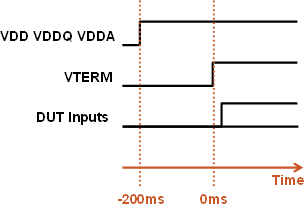
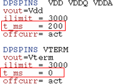

DPS setup for driver sharing
The signal lines shared between several DUT inputs require an active termination, represented by the voltage Vterm. This is realized with an DPS providing the termination voltage. All the DUT inputs are connected to this DPS via the transmission lines and the termination resistors.
To avoid damage to the device you must assure that the device supply voltages (VDDx) are present before the termination voltage (VTERM) is up. Both voltages have to be in steady state before the signals can be applied safely to the DUT inputs. This requires a sequence in turning on (and off) the DPS pins for both VDDx and VTERM.
In the figure below, the device voltages VDD, VDDQ and VDDA are programmed to switch on 200ms before the voltage VTERM ramps up. This allows enough time for voltages VDDx to settle to their final value before voltage VTERM is up. After VTERM has settled, the DUT inputs can be exercised with the test pattern.

In order to achieve this sequencing you use the setup time parameter in the DPS part of the level equations. SmarTest considers this time during standard connect sequence.
Example
The figure below shows a snippet of the level equation file, where the DPSPINS supplying the VDDx voltages are switched on 200 ms before the termination voltage.
